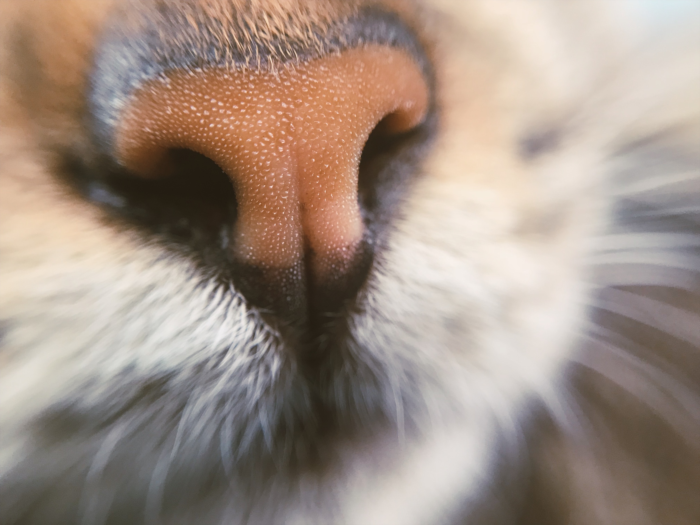

Go Wild. Learn about ushere.
Big Cat Central is dedicated to help the public understand the world of wild cats so that we can help them from becoming endangered.
We give honest and accurate information about our wild cats, more information is provided here.